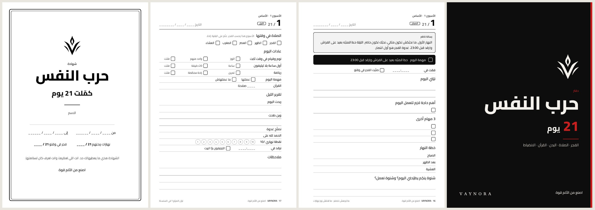
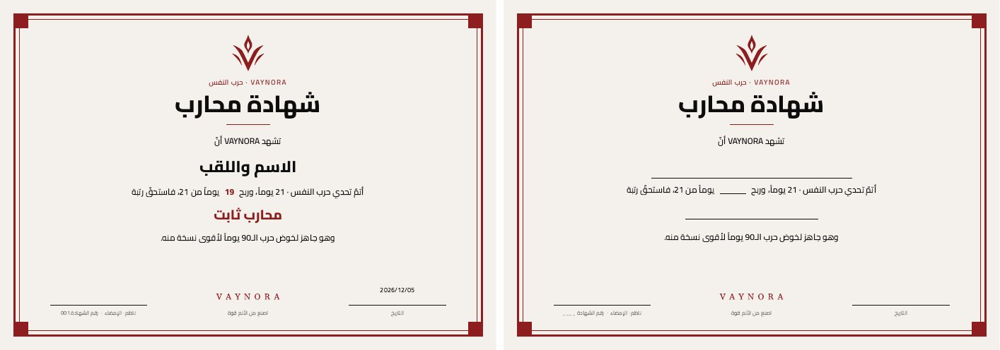
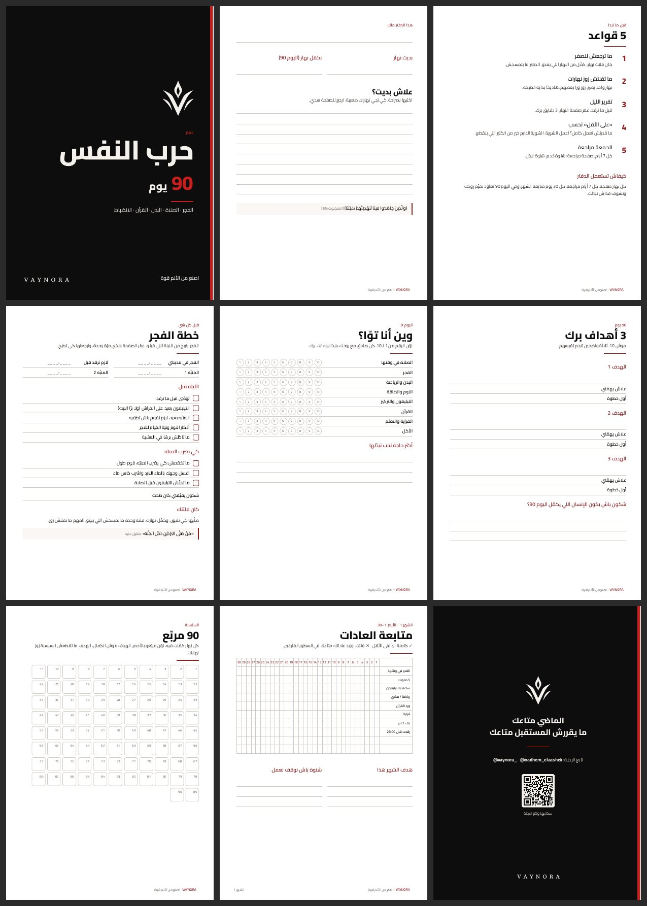

دفتر حرب النفس · 21 يوم
A5 · 74 صفحة داخل أكحل + غلاف ملوّن · صفحتين لكل نهار
شوف الدفتر الكامل (PDF)للمطبعة (زوز ملفات):
1. الداخل: 74 صفحة أبيض وأكحل، وجهين 2. الغلاف: الوجه والظهر بالألوان
شهادة محارب
A4 بالعرض · تتبعث PDF والناجح يطبعها
القالب الفارغ (تعمّرو باليد) مثال معمّر
نسخة قديمة 40 صفحة: داخل أكحل · ملوّنة
دفتر حرب النفس · 90 يوم
A5 · 116 صفحة · للطباعة
نزّل الدفتر الكامل (PDF) العينة (14 صفحة)